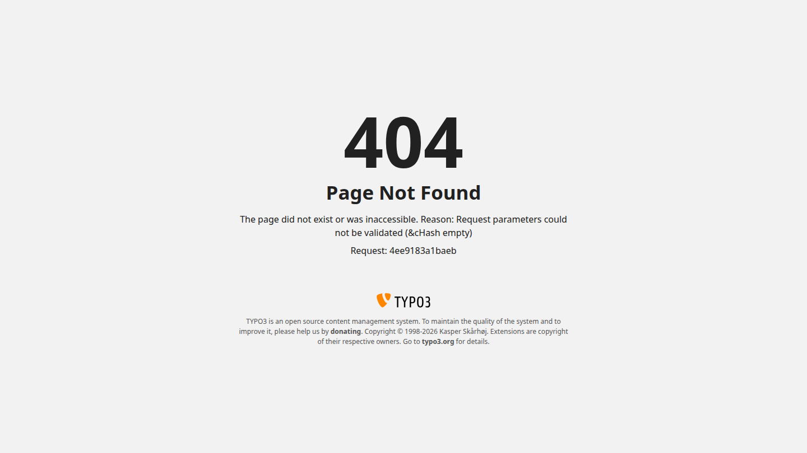
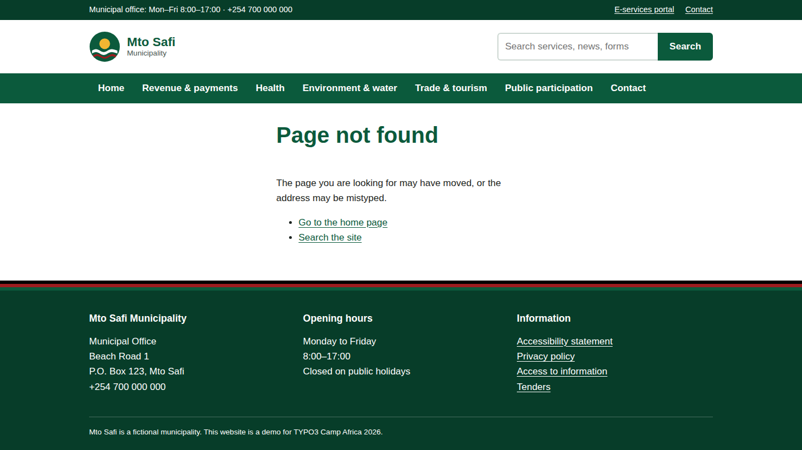
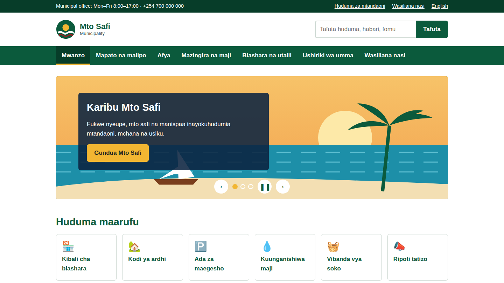

AI meets TYPO3
Part 2: thinking like a
TYPO3 developer
TYPO3 Camp Africa 2026 · Diani





// The search form in the page header submits "q" without a cHash; with // FE.cacheHash.enforceValidation the request would otherwise end in a 404. $GLOBALS['TYPO3_CONF_VARS']['FE']['cacheHash'] ['excludedParameters'][] = 'q';
errorHandling:
- errorCode: 404
errorHandler: Page
errorContentSource: 't3://page?uid=33'

apple-tree


// The slides belong to the element and are edited inside its form. 'tx_mtosafisitepackage_slides' => [ 'config' => [ 'type' => 'inline', 'foreign_table' => 'tx_mtosafisitepackage_slide', ], ], ExtensionManagementUtility::addRecordType([ 'value' => 'mtosafi_slider', 'group' => 'mtosafi', ], 'header, tx_mtosafisitepackage_slides, …');
<f:for each="{record.tx_mtosafisitepackage_slides}" as="slide"> <f:image image="{slide.image}" alt="" width="1600c" height="560c" /> <h2>{slide.title}</h2> <f:link.typolink parameter="{slide.link}"> {slide.link_label} </f:link.typolink> </f:for>




Thank you! Asante sana!
አመሰግናለሁ።
አመሰግናለሁ።
06Home page
07Slider
08Error page
09Search
10Fresh install
11Example content
13Events
14Kiswahili
github.com/
TYPO3-Documentation/
t3ca-demo Every stage: the recording
and
live: t3ca-14.ddev.site
TYPO3-Documentation/
t3ca-demo Every stage: the recording
and
dialogue.md